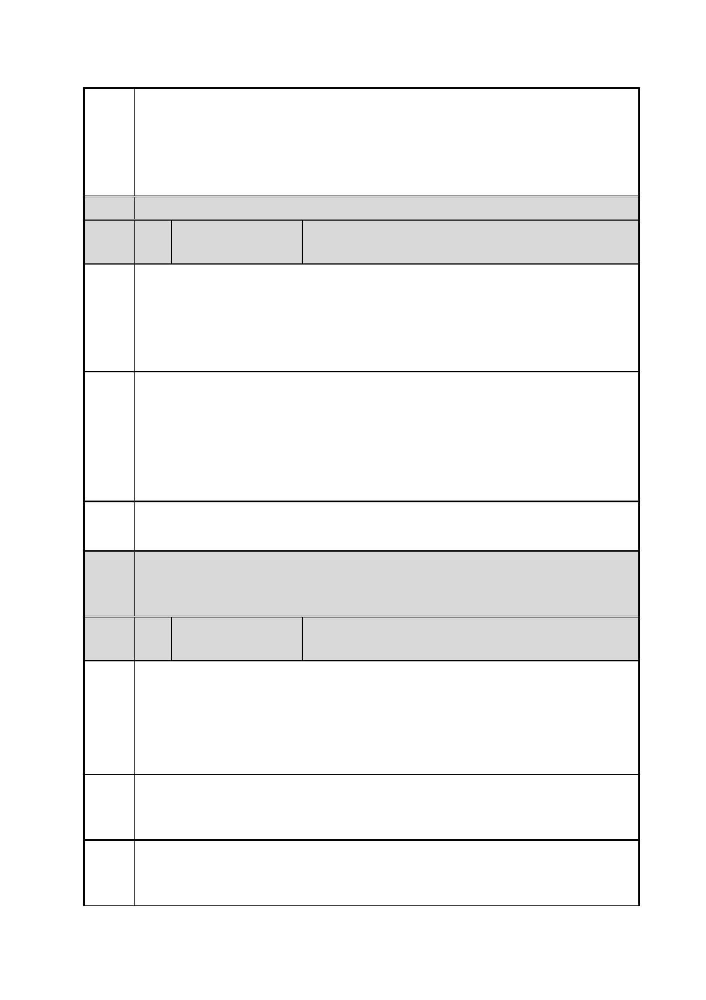

臺北市都市計畫委員會 公民或團體陳情意見綜理表
「變更臺北市信義區逸仙段二小段 33 地號等 21 筆土地（原臺北機廠）
案
名
工業區為創意文化專用區、特定專用區、道路及綠地用地主要計畫案」
及「擬定臺北市信義區逸仙段二小段 33 地號等 21 筆土地（原臺北機
廠）創意文化專用區、特定專用區、道路及綠地用地細部計畫暨劃定
都市更新地區計畫案」
決議
編
號
6 陳情人
楊○博
陳情
理由
建議
辦法
一、臺北機廠係全民共有之工業文化資產，雖業者（台鐵）欲出售償
債，但並無法有效完全改善台鐵虧損之歷史共業，亦有損毀文資之虞。
二、美術館與周遭之高強度開發並不符合居民期待與當前適度抑制房
價之政策目標，且與臺北機廠之鐵道文化意義並不對等。開發美術館
可以另覓他處，貫穿古今之臺北機廠僅此一處。
一、全區或大範圍區保留，在不損及原有廠區功能性下，可融入展演
文創，但不應反之取代舊有廠區設施。
二、可規劃作為鐵道、交通產業園區，部分設施維持既有設施運作功
能，產官學協力經營發展。
三、請多參照其他國家對於鐵路機廠作為產業遺址展場的作法與經營
方式，使臺北市、臺鐵局、居民、遊客達成「四贏」。
市府 同編號 1 市府回應內容。
回應
委員
會議 內容同編號 1。
決議
編
號
7 陳情人
陳○宏
文化部及台北市政府去年都大力支持在臺北舉辦的國際工業遺產保
陳情 存委員會大會，也認同「臺北宣言」；都發局長還參加開幕記者會。
理由 所以請政府不要說一套作一套，提出自相矛盾的施政規劃。一個自稱
一 科技業發達的地方，怎麼首都連科技類的博物館都沒有？這樣要如何
彰顯及傳承工業的價值，並培養下一代科技人才？
建議 臺北市應優先蓋目前連一座都沒有的工業博物館或技術博物館（不只
辦法 是教育中心而已，需有典藏展示研究功能），而非美術館二館。
一
陳情 只保有少數建築外殼與部分鐵軌或設備，是不足以稱為妥善保存產業
理由 文化資產的。
二
第 19 頁/共 154 頁